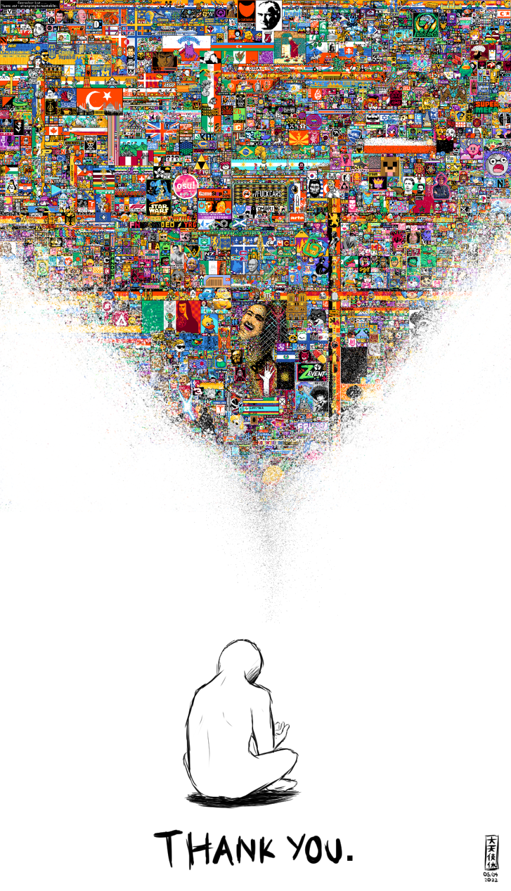

For four days, millions of Redditors across the world stayed up over their night-times, ready, on guard, armed with pixels determined to leave their mark.
Reddit’s r/Place is a subreddit that’s an open canvas, where each user places a tiny colored pixel and then sits tight on a timeout. Most users get timed out for five minutes, some with newer accounts reported longer wait times. It first appeared in 2017, reportedly as an April Fool’s joke and had over a million users placing over 16 miles tiles.
Five years later, this past weekend, the canvas was brought back and over 6 million users engaged.
The time-out rule ensures there’s no individual dominating the canvas. To make your mark, you must come together. And, Redditors sure did.
From little communities (subreddits) to people grouping together with others from the same country, the art race was heated.
At the beginning, everyone came together to paint two clean stripes across the top half in Ukraine’s flag colors. By evening, the artists had changed their mind. Other art including tiny sunflowers and profanity for Vladmir Putin had been placed over the flag. As communities raced to hold their place on the artboard, they realized quickly how coordinated you’d have to be to survive.
Quickly, many Discord servers were set up to coordinate, and boy were Redditors serious about their coordination. In the server for keeping the American flag intact, the national anthem was placed.
Channels within these servers were called Operation Rooms, Ellis Island discussions and diplomacy. Other countries' Discord servers too — including that of Pakistan, Germany and India — echoed strong nationalist sentiments.
Most notably, diplomacy was discussed with extreme seriousness — over pixelated art. Think of middle school Model UN, double the nationalism, cut out the fancy clothes and politeness and make the discussions happen in a virtual space and that’s what the weekend looked like.
Users on the American Discord server also debated including the entire text of the declaration of independence on the artboard. The confederate flag’s inclusion also came up.
Diplomacy was an interesting theme. Since the space was limited on the canvas and dominance was a sheer product of the number of users in your court and the time zone you were working with, people bounced on different servers to seek support. On the Indian server, a user representing Nepal sought out help.
Was this cosplay, roleplay or just devoted artists? Who knows.
On the British server, communism and Putin were being discussed. On the American server, users chimed in on what it means to a patriot. And, how much Americans love beer.
The canvas was also used for other social messaging, including one to save trafficked women in China.
Another wholesome moment was how many countries’ users, representing their flags’ artwork and smaller subreddits discussed how to share the limited space, called for truces and backed each other against other invaders.
It was an emotional experience for those who spent their entire weekend on it.
The user who assumed the title of the “President of the United States” registered themself as GitNuked.
If you look back at it years from now, the canvas can easily serve as a mini history textbook.
The different countries’ flags showed off their personality and symbols. The different countries’ flags showed off their personality. France’s flag featured a croissant, Germany’s featured beer and Bratwurst. On the Indian flag, there was a nod to UPI, the country’s five-year-old real-time payment system. The American flag had the bald eagle and Statue of Liberty.
The final piece represents the current turmoil in Ukraine, there’s a nod to art history by honoring Van Gogh painting The Starry Night.
Video game company GameStock whose stocks crushed Wall Street last year, thanks to Redditors, also found place on the board. Hong Kong’s 2019 protest also found a place on the canvas.
And finally, and to some degree annoyingly so, the popular party game Among Us’ character infiltrated in many artworks, including on a lemon!
If you’re still not convinced of the obsession, the art board, at least the American flag part of it, was turned into merchandise within hours. From phone cases to t-shirts and even face masks, everything’s up for sale!
It wasn’t just diplomacy, there were also moments of laughter during the weekend. The art inspired other art — in the form of memes, of course!
Users trying to make Canada’s flag struggled for 48 hours straight. It went from resembling a leaf to … something to a banana and then back to being a maple leaf, of sorts.
I’d be remiss if I wrote this piece without mentioning The Swarm, a subreddit community that was determined to deface the artboard with scary art that looked like everything from ghosts to skulls to just black spotness.
On their Discord server some users described the group as the “Antagonists of the artboard.” Their channels were named “Current orders,” “Plague Chat” and “Propaganda Here.” On multiple servers, users addressed each other as “soldiers,” and “comrades” bringing an air of military-style coordination. The planning was done by announcing pixel coordinates on the Discord server.
On Monday night, when r/place's canvas bid adieu, Swarm’s users gathered on a voice channel to reflect and share why they joined the group and what it meant to them. These virtual toasts were played alongside somber music.
The final parting words included speeches of thank you notes, overly emotional memories of their pixels making a difference.
And if you thought influencers are only on Instagram and TikTok, allow me to introduce you to the world of Twitch. The video live streaming platform broadcasts online games and esports competitions. Influencers, who in Twitch terms are called Streamers, also took to playing around on the canvas.
Mizkif and xQc, two popular streamers, paraded their followers to battle it out with their pixels. xQc hit 233,000 live views, his personal best, and then he reportedly received death threats over his streams about r/place.
Millions of users displaying their camaraderie to leave their mark on this digital archive isn’t a force to be ignored. Between just Twitch and Discord, there are over 400 million registered users worldwide and even as they may be anonymous, they’re still among us.
Whether you understand the bizzarity of this or not, millions of people from across the world came together to play a game with few rules, a lot of fanfare and ultimately created a piece of history.
The weekend truly was something. Here’s a tribute meme a Redditor posted after the canvas was shut.
